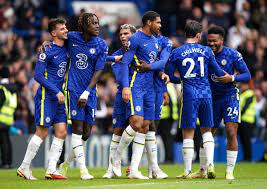

|
Chelsea Football Team |
 |
.jpg)
Chelsea transfer news
BREAKING NEWS | MOST POPULAR | TRENDING | CHELSEA VIDEOS
GB flag icon Ted Boehly wants to complete Chelsea signing of goal-machine ICChelseaNews.com GB flag icon Chelsea in danger of another transfer blunder as Cesare Casadei deal is hijacked Metro GB flag icon Manchester City continue negotiations with Anderlecht over£12m-rated Sergio Gomez Daily Mail 30 minutes to 1 hour old IN flag icon The ideal objectives for the Premier League Big 6 for the 2022-23 season SportsKeeda.com 1 hour to 2 hours old GB flag icon Arteta kept dossier on Aubameyang’s ‘catalogue of misdemeanours’ before Chelsea transfer target’s Arsenal axe The Sun GB flag icon Five kneejerk takeaways from the Premier League’s opening weekend Thefootballfaithful.com GB flag icon Thomas Tuchel sends message to Anthony Taylor and referee team ahead of Chelsea vs Tottenham Football.London GB flag icon
Chelsea confirm 2022-23 squad numbers, including for Chukwuemeka, Broja, and Gallagher
| S/N | First name | Last Name |
|---|---|---|
| 1 | Jay-Jay | Uchenna |